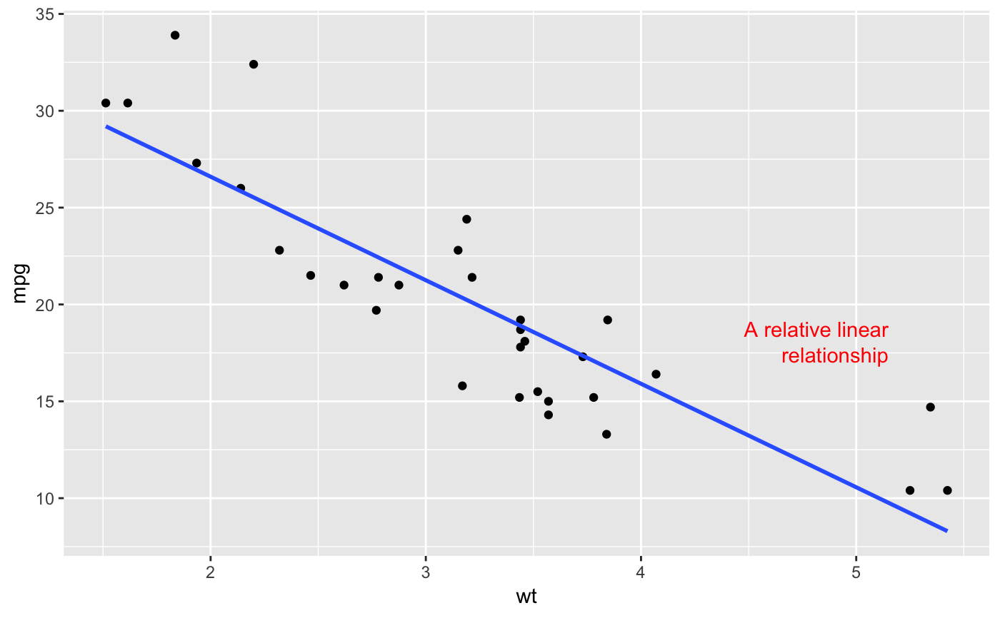

Annotates the plot with text. Compared to annotate("text",...), the
placement of the annotations is specified in plot coordinates (from 0 to 1)
instead of data coordinates.
annotate_textp(label, x, y, facets = NULL, hjust = 0, vjust = 0, color = "black", alpha = NA, family = theme_get()$text$family, size = theme_get()$text$size, fontface = 1, lineheight = 1, box_just = ifelse(c(x, y) < 0.5, 0, 1), margin = unit(size/2, "pt"))
| label | text annotation to be placed on the plot |
|---|---|
| x, y | positions of the individual annotations, in plot coordinates (0..1) instead of data coordinates! |
| facets | facet positions of the individual annotations |
| hjust, vjust | horizontal and vertical justification of the text relative to the bounding box |
| color, | alpha, family, size, fontface, lineheight font properties |
| alpha, family, size, fontface, lineheight | standard aesthetic customizations |
| box_just | placement of the bounding box for the text relative to x,y coordinates. Per default, the box is placed to the center of the plot. Be aware that parts of the box which are outside of the visible region of the plot will not be shown. |
| margin | margins of the bounding box |
p <- ggplot(mtcars, aes(x = wt, y = mpg)) + geom_point() p <- p + geom_smooth(method = "lm", se = FALSE) p + annotate_textp(x = 0.9, y = 0.35, label="A relative linear\nrelationship", hjust=1, color="red")